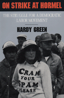

<body bgcolor="#FFFFFF" text="#000000" link="#0000FF" vlink="#CC0000" alink="#CC0000"><center><hr width="350" size="1" align="center" noshade>An insider's account of this watershed strike<hr width="350" size="1" align="center" noshade><p><a href="https://cdcshoppingcart.uchicago.edu/Cart/ChicagoBook.aspx?ISBN=9780877226352&&PRESS=temple" target="_top">Buy this book!</a> | <a href="https://cdcshoppingcart.uchicago.edu/Cart/Cart.aspx?PRESS=temple" target="_top">View Cart</a> | <a href="https://cdcshoppingcart.uchicago.edu/Cart/Cart.aspx?PRESS=temple" target="_top">Check Out</a></p><p></p></center><!--none//--><h1>On Strike at Hormel</h1>
<H2>The Struggle for a Democratic Labor Movement</H2>
<h3>Hardy Green, foreword by David Moberg</h3>
<P>cloth 0-87722-635-0 $29.95, Oct 89, <FONT COLOR=#990033>Out of Print</FONT>
<br>paper 0-87722-832-9 $27.95, Apr 91, <FONT COLOR=#990033>Out of Stock Unavailable</FONT>
<BR> 369 pp
</P><BLOCKQUOTE><I>"Green manages to capture the angst of a divided small town and the union's fatal gamble in confronting both Hormel and its own international organization.... It's the best accounting yet of a landmark labor-management confrontation."</I>
<br>&#151<b><I>USA Today</I></b><I></I></BLOCKQUOTE>
<p>In December of 1984, the members of United Food and Commercial Workers (UFCW) Local P-9 initiated a campaign against wage and benefit concessions at Geo. A. Hormel Company in Austin, Minnesota. By summer, they were involved in what many observers would come to regard as the strike of the decade, both because of the energy and imagination of the union members and because of the nationwide response to their cause. Nevertheless, by spring 1986, Hormel had proclaimed victory&#151and the strikers’ unsympathetic International union brought an end to the strike by placing the local in receivership.
<p>The Austin strike was far from an ordinary labor dispute: For the 1,500 P-9 families and their supporters, it was nothing less than a crusade to defend the Middle American way of life. As a consultant for Corporate Campaign, Inc., a firm hired by the strikers to advance their cause, Hardy Green offers the first insider’s account of this watershed strike. He traces the history of labor relations at Hormel and in the meatpacking industry, and outlines the innovative union techniques employed by the strikers, the "corporate campaign." Using records obtained through a comprehensive freedom-of-information project, Green reveals behind-the-scenes operations of the National Guard and various law enforcement agencies that proved crucial to breaking the strike. And he discusses the meaning of the local’s dual fight&#151with both the Hormel company and with its own International union&#151within the current labor environment.
<BR>&nbsp;<h2>Reviews</h2>
<p><I>"As Green shows, the Hormel strike turned out badly for everyone. The company besmirched its formerly paternalistic reputation by its tough stance, which involved permanently replacing strikers with lower-paid workers.... Green makes it clear that those who really suffered were the workers. Most lost their jobs, and in the small town of Austin, few could find new ones good enough to let them rebuild their lives."</I>
<br>&#151<b><I>Business Week</I></b>
<p><I>"Opposed even by their own United Food and Commercial Workers national parent union, P-9 workers endured zero-cold picketing, police and military action, jail time, Washington labor-government apathy.... Green constructs an almost hour-by-hour account of this landmark labor struggle in an important study that will be of interest to executives as well as unionized workers."</I>
<br>&#151<b><I>Publisher's Weekly</I></b>
<p><I>"Anyone who writes about the labor turmoil of the 1980s will want to read </I>On Strike at Hormel<I>."</I>
<br>&#151<b><I>The Nation</I></b>
<BR>&nbsp;<h2>Contents</h2><P>
<p>Preface
<br>Foreword &#150 David Moberg
<br>1. "Families Fighting Back"
<br>2. The Weight of the Past
<br>3. Spreading the Word
<br>4. A Community of Their Own
<br>5. Ambushed
<br>6. Closing Ranks
<br>7. Disobedience
<br>8. "This is not Johannesburg"
<br>9. The Chain of Command
<br>10. Conclusion
<br>Notes
<br>Index
</P><BR>&nbsp;<H2>About the Author(s)</H2>
<P><b>Hardy Green</b>, formerly editor of several union publications, currently teaches in the Humanities Department at the School of Visual Arts and is on the staff of <I>Business Week</I> magazine.</P>
<BR><H2>Subject Categories</H2>
<p><A HREF="/tempress/sociology.html" TARGET="_top">Sociology</a>
<BR><A HREF="/tempress/labor.html" TARGET="_top">Labor Studies and Work</a>
</p>
<BR><h2 class="inpageheading">In the series</H2>
<P><I><a href="http://www.temple.edu/tempress/labor_change.html" onMouseOver="window.status='Click for other books in this series!'; return true;" onMouseOut="window.status=''; return true;" target="_top">Labor and Social Change</a></i>, edited by Paula Rayman and Carmen Sirianni.
</p><p><i>Labor and Social Change</i>, edited by Paula Rayman and Carmen Sirianni, includes books on workplace issues like worker participation, quality of work life, shorter hours, technological change, and productivity, as well as union and community organizing and ethnographies of particular occupations.</p>
<p align="center"><a href="https://cdcshoppingcart.uchicago.edu/Cart/ChicagoBook.aspx?ISBN=9780877226352&&PRESS=temple" target="_top">Buy this book!</a> | <a href="https://cdcshoppingcart.uchicago.edu/Cart/Cart.aspx?PRESS=temple" target="_top">View Cart</a> | <a href="https://cdcshoppingcart.uchicago.edu/Cart/Cart.aspx?PRESS=temple" target="_top">Check Out</a></p><p><font face="Arial" size="1"><a href="copyright.html" onMouseOver="window.status='Web Copyright Policy';return true;" onMouseOut="window.status=''" title="Web Copyright Policy">&copy;</a> 2015 <a href="http://www.temple.edu" target="new" onMouseOver="window.status='Link to Temple University home page';return true;" onMouseOut="window.status=''" title="Link to Temple University home page">Temple University</a>. All Rights Reserved. http://www.temple.edu/tempress/titles/605_reg.html</font></p>